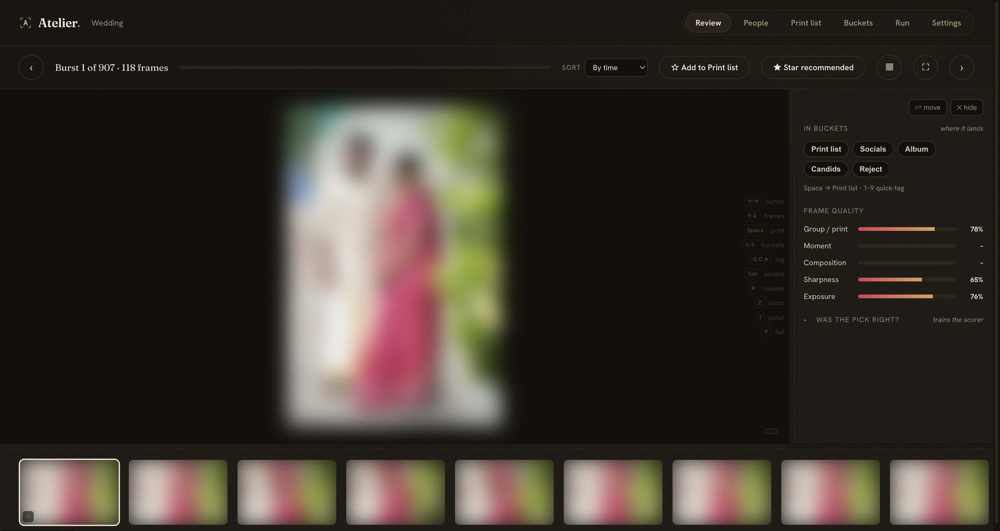
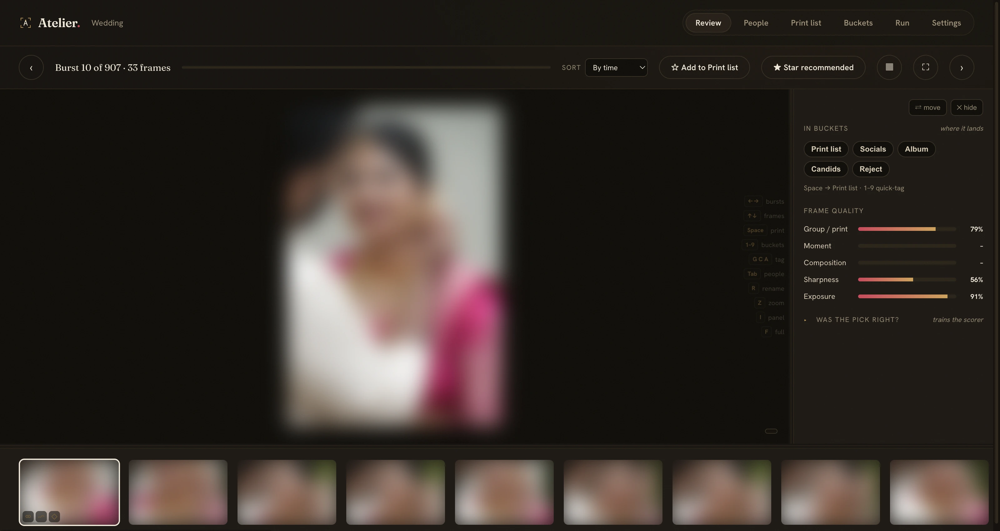
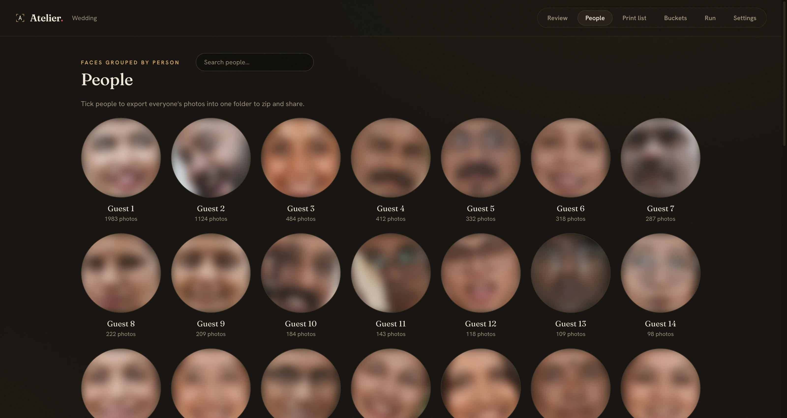
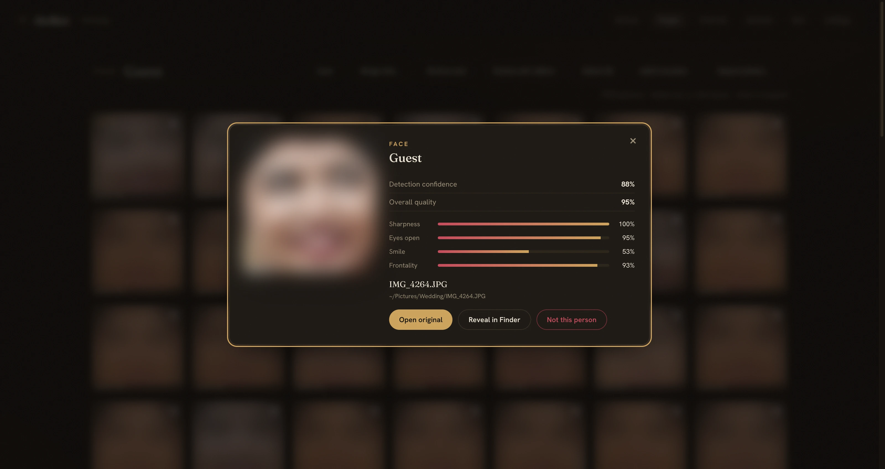
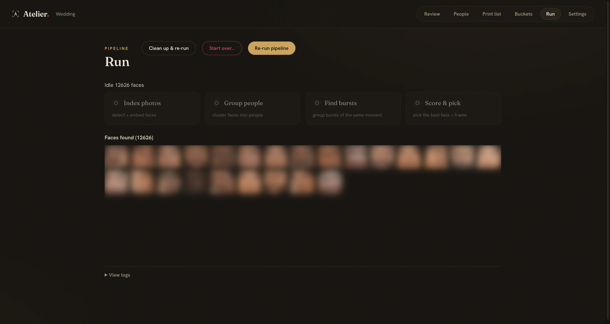
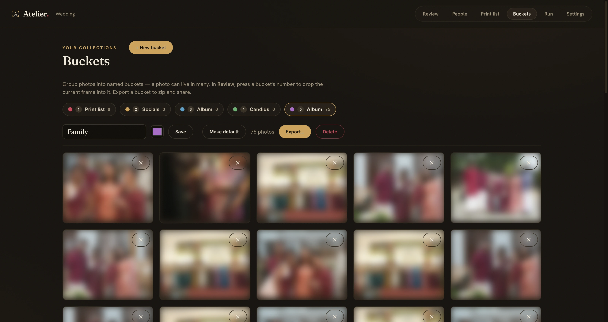

Burst-aware picks
Every burst, one keeper.
Frames gathered back into the moment they came from, then scored per intent — group, candid, moment. The keeper rises; you see exactly why.
Local-first · SQLite · no cloud
A culling desk for libraries too big for the cloud — a wedding, a year of family photos, a whole trip. Atelier reads every frame and surfaces the keeper, without touching a single original.
Real screenshots below — a live 5,592-photo wedding, 12,626 faces, 907 bursts. Faces blurred for privacy.

No marketing mockups — these are the actual app, on a real wedding shoot. Tap any frame to see it full size.

Frames gathered back into the moment they came from, then scored per intent — group, candid, moment. The keeper rises; you see exactly why.

12,626 faces become a handful of people you can name. Merge, split, or reject a stray — your fixes outlive the next re-cluster.

One MediaPipe pass reads per-eye blink, head pose, gaze and a genuine-vs-posed smile; numpy reads the rest. Shown as bars you can actually read.

Index 20,000 frames off an external disk — it parks a corrupt file instead of crashing, streams progress live, and picks up exactly where it stopped.

The print list is just your default bucket — Space drops the keeper in. Make your own; a photo lives in many. Export copies originals out — nothing else moves.
~/.atelier/. Your index, picks and people — all on disk,
all yours.
Full disclosure: one bundled model library (Google's MediaPipe) attempts an anonymous usage ping during scoring. It carries none of your images, fails the moment you're offline, and Atelier never initiates it — firewall the process if you want it airtight.
The web UI is project-centric: create a project, choose a folder with the native picker, and it indexes live.
make install # venv (mise) + full pipeline deps
make start # web server → http://localhost:5050
make open # open the dashboard
# + New Project → Choose Folder → it indexes live
make demo # or seed a synthetic project to explore firstPython 3.11 / 3.12 · prebuilt wheels for insightface, hdbscan, mediapipe · first index needs internet once for model weights.